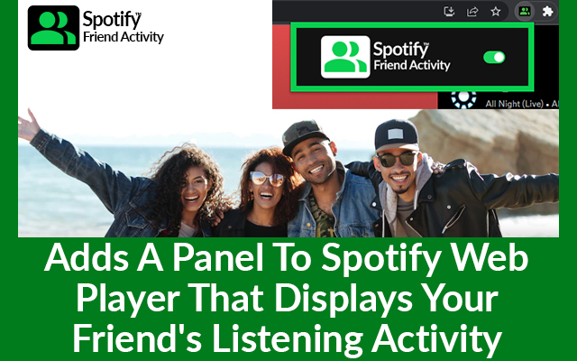

Have you ever wondered what tunes your friends are jamming to on Spotify? The Spotify Friend Activity extension adds a new dimension to your Spotify Web Player experience. Moreover, this nifty tool introduces a panel that showcases your friends' listening habits in real time, giving you a sneak peek into their musical journeys. Before diving in, there are a few prerequisites to ensure you can fully enjoy this feature. First, ensure you're following the Spotify users whose activities you want to see. Furthermore, your friends must be active on the Spotify Web Player or desktop app, having used it at least once in the past week. Most importantly, the "Share my listening activity on Spotify" setting must be enabled. Once these bases are covered, you’re all set to explore the Spotify Friend Activity Chrome extension. Are you curious about how to install it? Keep reading for a step-by-step guide that will walk you through the process. Get ready to unlock a new way of connecting with your friends through music!
